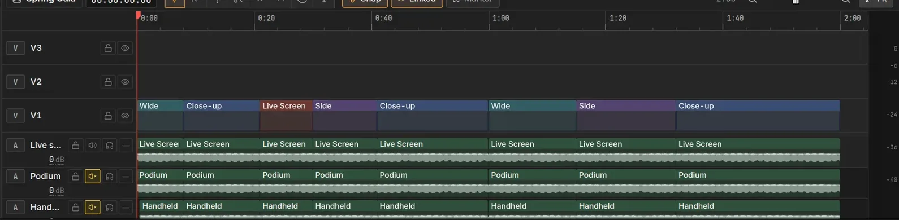

Live production software for Windows
Run the whole event from one computer.
Lumora switches your cameras, streams and records, and drives every screen in the room. Lumora Studio edits what you recorded. Lumora Planner keeps the team on one run of show.
Free · Windows 10 and 11, 64-bit · Release notes

Stream to several platforms at once
- YouTube
- Vimeo
- Twitch
- Any RTMP server
- NDI on your network
 Lumora
Lumora
A complete live production studio.
Line up the next shot out of sight, then take it live with a clean transition. Lumora runs the stream, the recording, the projector behind the stage and the monitor facing your speakers, all from one operator position.
Switching
- Next and On air monitors, TAKE, CUT and a T‑bar
- 22 transitions and video stingers
- Picture in picture, split screen and green screen
- Automatic camera switching
Streaming and recording
- Several platforms at once, 720p to 4K
- A separate vertical 9:16 stream
- Every camera recorded to its own file
- NDI output and instant replay with slow motion
Graphics
- Lower thirds, titles, tickers and credits
- Scoreboards with a game clock
- Countdowns that act when they reach zero
- Your colors, fonts and logo on everything
Camera intelligence
- Background removal without a green screen
- Auto-framing that follows the speaker
- Live captions, transcribed on the computer
- PTZ control with saved shots
Every screen in the room
- Live Screen for the stream and recording
- Back Screen for the projector, with stage visuals
- Stage Monitor with messages, clock and teleprompter
- Polls, raffles and trivia on the audience's phones
Control
- Presets, cues and a timed run of show
- Phone and tablet remote
- Stream Deck plugin, MIDI and keyboard shortcuts
- A panic button that blanks every screen


- No error screens. If a camera drops out, the audience sees your logo, never a message.
- Saves as you go. If the computer restarts, the event comes back as it was.
- Works offline. Only streaming and online inputs need the internet.
 Lumora Studio
Lumora Studio
Edit the event you just recorded.
Open a recording with every camera already in sync and cut it like a multicam edit. Lumora Studio is a full video editor with color, audio, captions and smart tools that take care of the slow parts.

Editing
- Multi-track timeline with ripple, roll, slip and slide
- Speed ramps, keyframes and templates
- Titles, transitions and effects
- Team editing with shared projects and comments
Color and masks
- Node-based color with wheels, curves and LUTs
- Waveform, parade, vectorscope and histogram
- AI masks that find people and objects
- Tracking that keeps a mask on its subject
Smart tools
- Automatic multicam cutting
- Silence and filler word removal
- Auto reframe for vertical and square
- Highlight reels from long recordings
Captions and performance
- Transcripts you edit like text
- Captions burned in, embedded or as an SRT file
- Render cache and proxies for smooth playback
- Native GPU playback (beta)


 Lumora Planner
Lumora Planner
Plan the run of show together.
The team builds the run of show in the browser: sections, cues, times, who is responsible and notes, with comments on each cue. On the day, Lumora loads it straight into its cues.
- Shared with editors and viewers
- Start times and running totals worked out for you
- A printable cue sheet
- Loads into Lumora: Run of show, then Load from Planner
Doors
Program
Example plan · 5 cues · 1 h 10 min
How it fits together
Three apps, one event: plan it, run it live, then edit and publish it.
- Plan. The team writes the run of show in Lumora Planner, with times, people and notes for each cue.
- Run. Lumora loads the plan as cues, switches the show and records every camera to its own file.
- Edit. Lumora Studio opens the recordings in sync, ready to cut, grade, caption and export.
System requirements
Guidelines for a typical 1080p event. More cameras, 4K, background removal and auto-framing need the recommended hardware.
Lumora
| Part | Minimum | Recommended |
|---|---|---|
| System | Windows 10, 64-bit | Windows 11, 64-bit |
| Processor | 4 cores, e.g. Intel Core i5 8th gen or AMD Ryzen 5 2600 | 8 cores, e.g. Intel Core i7 12th gen or AMD Ryzen 7 5700X |
| Memory | 8 GB | 16 GB |
| Graphics | DirectX 12 graphics with hardware video encoding (Intel Quick Sync, NVIDIA NVENC or AMD AMF) | NVIDIA GeForce RTX 3060 or AMD Radeon RX 6600 or better |
| Displays | One 1920 × 1080 display | Two or more, for the Back Screen and Monitor |
| Network | Upload of about twice the stream bit rate (10 Mbps for 1080p at 6 Mbps) | Wired Ethernet |
Lumora Studio
| Part | Minimum | Recommended |
|---|---|---|
| System | Windows 10, 64-bit | Windows 11, 64-bit |
| Processor | 4 cores | 8 cores or more |
| Memory | 8 GB | 32 GB for 4K and multicam |
| Graphics | DirectX 12 graphics with 2 GB of video memory | NVIDIA GeForce RTX 3060 (8 GB) or better |
| Storage | SSD with room for proxies and the render cache | A separate NVMe SSD for media |
Lumora Planner runs in any current browser: Chrome, Edge, Firefox or Safari, on a computer, tablet or phone.
Download
Free for Windows 10 and 11. Each download is the latest release; the apps update themselves after that.
Using an Elgato Stream Deck? Get the Lumora Stream Deck plugin for TAKE, CUT, inputs with tally, overlays, replay, recording and going live. Lumora also offers it when it finds a Stream Deck.
Looking for an earlier version? See all releases.
Questions
Windows says it protected my PC. Is Lumora safe to run?
Windows SmartScreen warns about new apps it has not seen often. Click More info, then Run anyway. On Windows 11 computers with Smart App Control turned on, the installer may be blocked with no option to run it; Smart App Control can only be switched off as a whole, in Windows Security under App & browser control, so decide with whoever manages the computer. Only download Lumora from this page or the project's GitHub releases.
Why does my account need approval?
You create your account inside Lumora or Lumora Studio the first time you open it. Each new account is approved by the Lumora team for the apps it will use. Until then the app waits at the sign-in screen, and it opens once you are approved. Teammates you invite to a plan in Lumora Planner don't need approval: they make a free account and see only the plans shared with them.
Does Lumora work without the internet?
Yes. Once your account is approved, Lumora keeps working offline for up to 7 days after it last checked in (connect once before the event), so a venue without internet is not a problem. Switching, recording, titles and every screen in the room run on the computer. Only streaming out, live chat, guests by link and inputs from internet addresses need a connection. Phones for polls and the remote can join a local Wi-Fi network instead.
What is in an error report, and who sees it?
Nothing is sent unless you agree. If you say yes, reports of unexpected errors are cleaned of personal details before they are sent, and only the Lumora team can read them. Your event, project and media files are never included. Report a problem is always your choice, and you can change your answer at any time in Settings in Lumora, or the Help menu in Lumora Studio.
Does it work with Stream Deck and other controllers?
Yes. The Lumora Stream Deck plugin (see Download) puts TAKE, CUT, inputs with tally, overlays, replay, recording and going live on an Elgato Stream Deck. X-keys and other panels work through Bitfocus Companion, and Lumora also takes MIDI controllers, presentation clickers, and a phone or tablet on the same network.
Can I use my own fonts and branding?
Yes. Set your colors, fonts and logo once and every title, lower third, ticker and scoreboard follows it. Lumora includes 500 open-source fonts that work offline, and you can add your own.
Contact and feedback
Found a problem, have an idea, or have a question? Send it here. Add your email if you would like a reply.